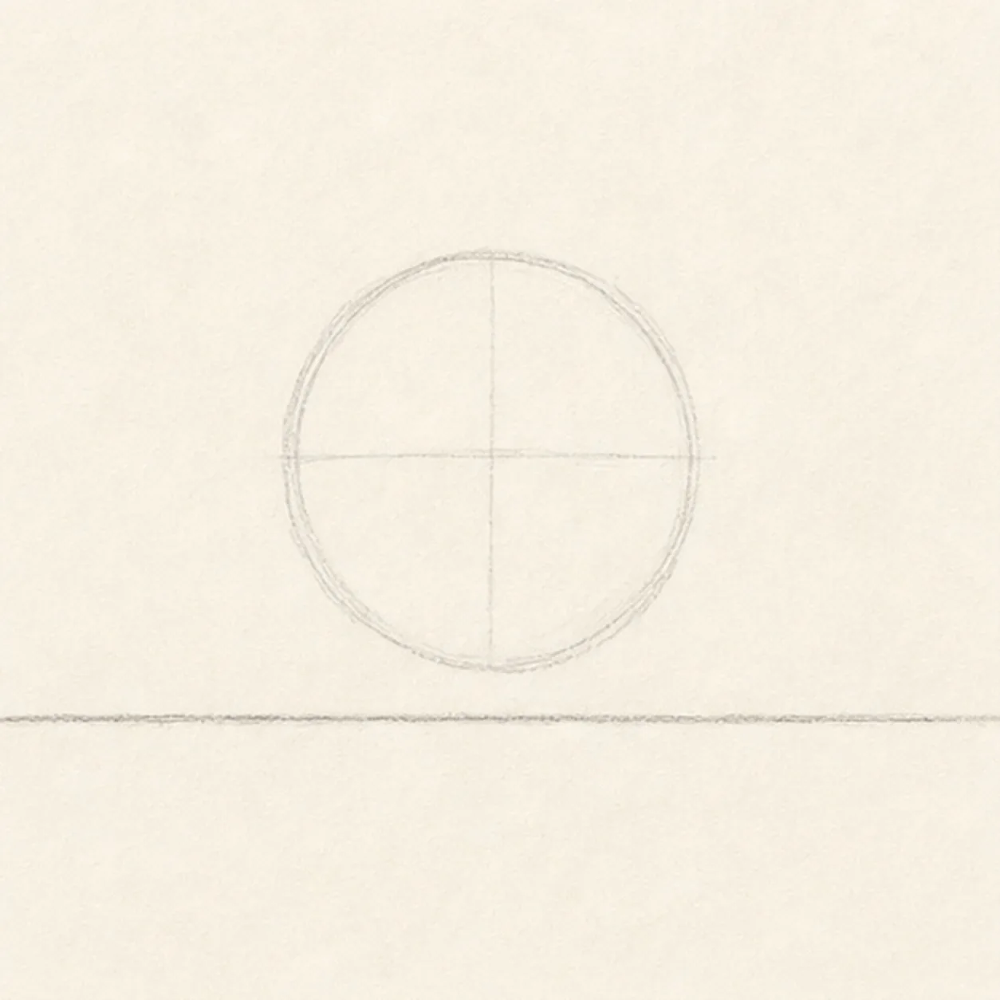
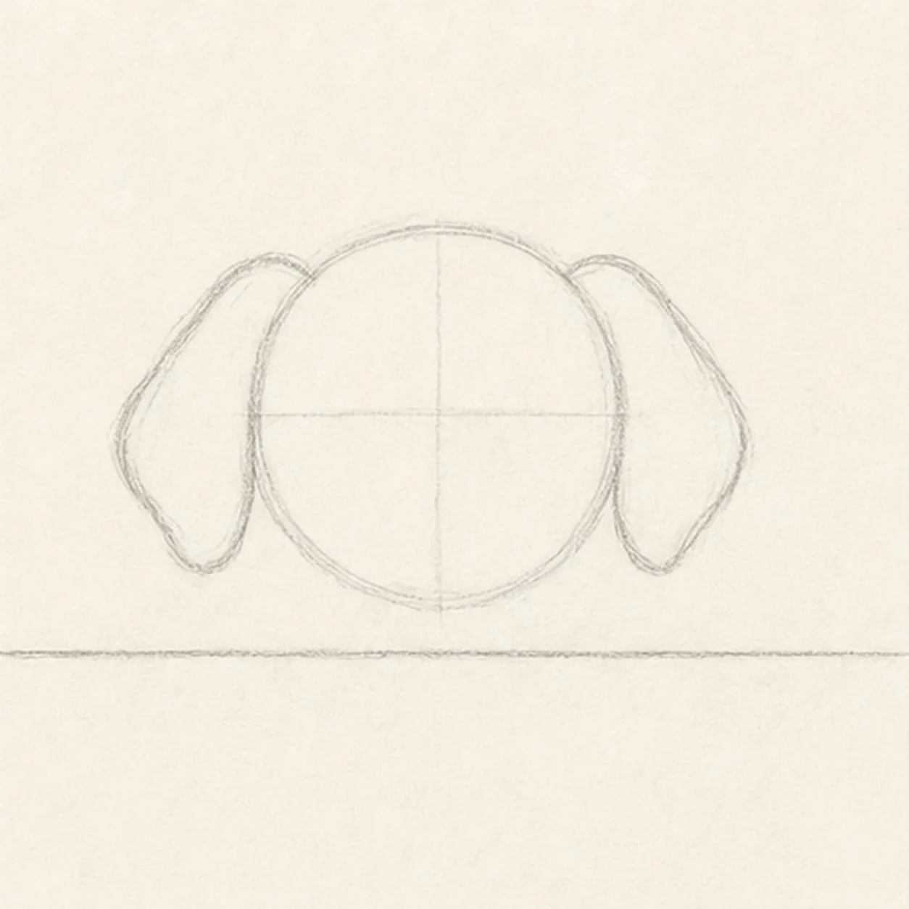
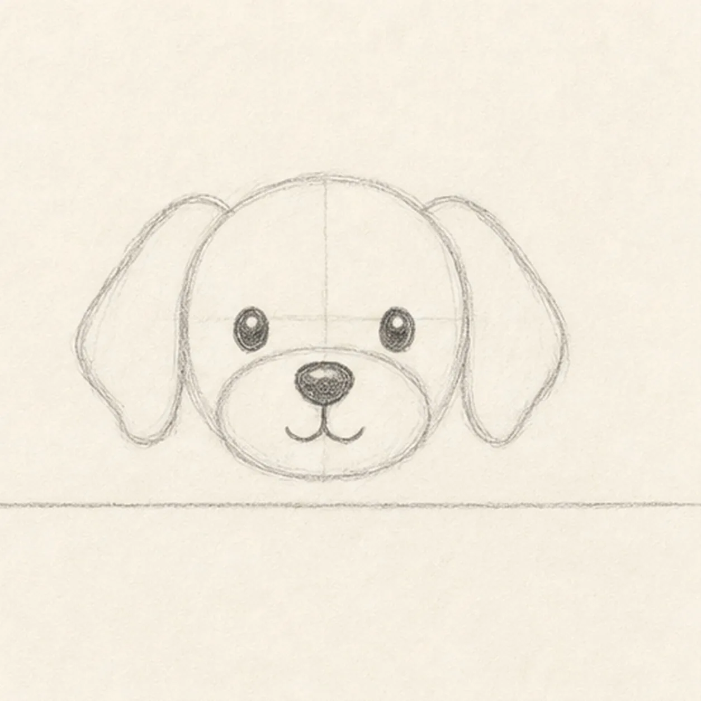
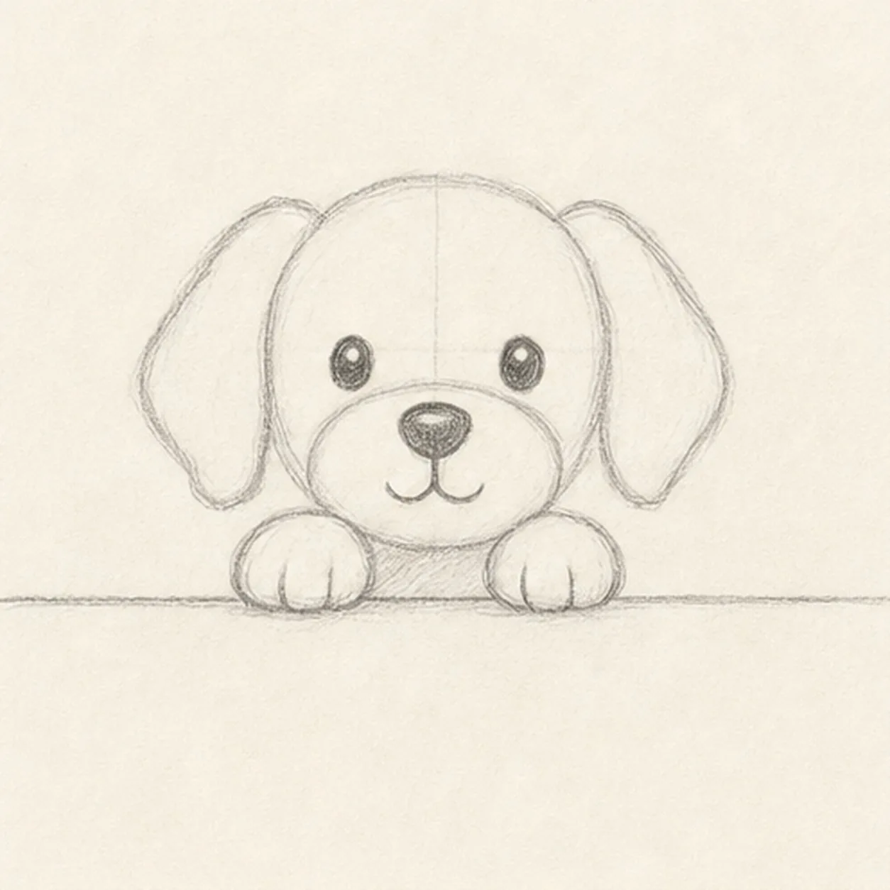
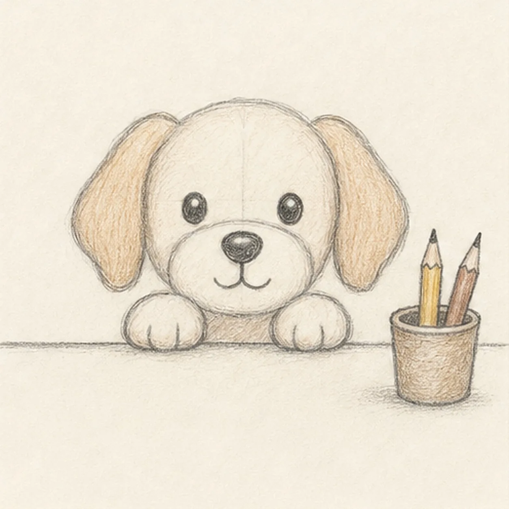

From the archive
Let's draw a desk dog
Treat this as one small practice round: build the subject lightly, notice the shapes, then darken only the lines that help the finished sketch.
-
01

Block the head and desk
Draw a round head guide, then run a straight desk edge across the lower part of the page.
Sketch tip: Let the head float above the line for now. The paws will connect the dog to the desk later.
-
02

Drop in the ears
Add two soft floppy ears on the sides of the head, keeping them about the same length.
Sketch tip: Round the ear tips instead of pointing them. Soft ears make the little dog feel friendly.
-
03

Build the face
Place two eyes, a rounded muzzle, a dark nose, and a small curved mouth inside the head.
Sketch tip: Keep the eyes level with each other. That simple check makes the face read clearly at thumbnail size.
-
04

Set the paws on the desk
Draw two small paws overlapping the desk edge, then add short toe curves inside each paw.
Sketch tip: The paws should sit in front of the desk line. Erase or soften the line where the paws cover it.
-
05

Add the pencil cup
Sketch a small cup on one side of the desk, add two pencils inside it, and touch in warm color on the ears and pencils.
Sketch tip: Keep the cup smaller than the dog's head. It should support the scene, not steal the focus.
-
06

Finish the desk dog
Darken the dog, desk, paws, pencil cup, pencils, and warm shading without adding screens, lettering, or extra office clutter.
Sketch tip: Stop while the fur marks still feel light. A few soft pencil strokes are enough to give the dog texture.